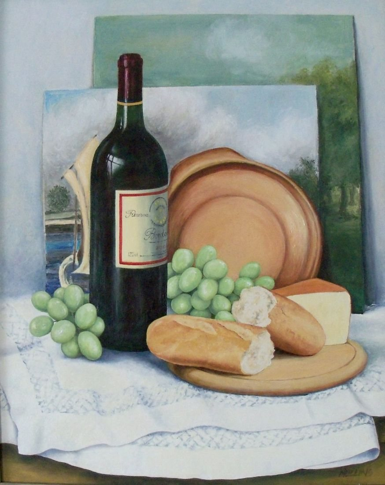

 Select the picture to see it larger Still Life with Grapes and BottleNo. 84 MediumOil on canvas boardSize51 × 42 cmYear1980sPriceNot for sale[A few lines from Joan about this painting]
 Three Shells
Three Shells